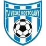

U11 prípravka
Prípravka U11 ObFZ Trnava · 9. miesto z 12
Výsledky prípraviek sa nezapisujú, rozpis zápasov je nižšie.
Program
-
4. 4.ne · 10:00
Match dayOŠK Smolenicevonku · 12. kolo

-
11. 4.ne · 10:00
Match dayOŠK Križovany nad Dudváhom Bdoma · 13. kolo

-
18. 4.ne · 10:00
Match dayTJ Slovan Červeníkvonku · 14. kolo

-
25. 4.ne · 10:00
Match dayTJ Iskra - Horné Orešanydoma · 15. kolo

-
2. 5.ne · 10:00
Match dayTelovýchovná jednota Veľké Kostoľanyvonku · 16. kolo

-
9. 5.ne · 10:00
Match dayTJ Elastik Bohdanovcevonku · 17. kolo

-
16. 5.ne · 10:00
Match dayFK Šulekovodoma · 18. kolo

-
23. 5.ne · 10:00
Match dayMTK Leopoldovvonku · 19. kolo

-
30. 5.ne · 10:00
Match dayAkadémia Procházka & Bukata Pečeňadydoma · 20. kolo

-
6. 6.ne · 10:00
Match dayTJ Družstevník Dechticevonku · 21. kolo

-
13. 6.ne · 10:00
Match dayŠPORTOVÉ KLUBY BLAVA 1928doma · 22. kolo

Výsledky
-
Odohrané
–
ŠPORTOVÉ KLUBY BLAVA 1928
8. 11. · vonku · 11. kolo
-
Odohrané
–
TJ Družstevník Dechtice
1. 11. · doma · 10. kolo
-
Odohrané
–
Akadémia Procházka & Bukata Pečeňady
25. 10. · vonku · 9. kolo
-
Odohrané
–
MTK Leopoldov
18. 10. · doma · 8. kolo
-
Odohrané
–
FK Šulekovo
11. 10. · vonku · 7. kolo
-
Odohrané
–
TJ Elastik Bohdanovce
4. 10. · doma · 6. kolo
- Odohrané – Telovýchovná jednota Veľké Kostoľany 27. 9. · doma · 5. kolo
-
Odohrané
–
TJ Iskra - Horné Orešany
20. 9. · vonku · 4. kolo
-
Odohrané
–
TJ Slovan Červeník
13. 9. · doma · 3. kolo
-
Odohrané
–
OŠK Križovany nad Dudváhom B
6. 9. · vonku · 2. kolo
-
Odohrané
–
OŠK Smolenice
30. 8. · doma · 1. kolo
Tabuľka
Prípravka U11 ObFZ Trnava
| Poradie | Tím | Z | V | R | P | Skóre | B |
|---|---|---|---|---|---|---|---|
| 1 | Telovýchovná jednota Veľké Kostoľany | 11 | 0 | 11 | 0 | 0:0 | 11 |
| 2 | 11 | 0 | 11 | 0 | 0:0 | 11 | |
| 3 | 11 | 0 | 11 | 0 | 0:0 | 11 | |
| 4 | 11 | 0 | 11 | 0 | 0:0 | 11 | |
| 5 | 11 | 0 | 11 | 0 | 0:0 | 11 | |
| 6 | 11 | 0 | 11 | 0 | 0:0 | 11 | |
| 7 | 11 | 0 | 11 | 0 | 0:0 | 11 | |
| 8 | 11 | 0 | 11 | 0 | 0:0 | 11 | |
| 9 | 11 | 0 | 11 | 0 | 0:0 | 11 | |
| 10 | 11 | 0 | 11 | 0 | 0:0 | 11 | |
| 11 | 11 | 0 | 11 | 0 | 0:0 | 11 | |
| 12 | 11 | 0 | 11 | 0 | 0:0 | 11 |
Súpiska
Hráči, ktorí v roku 2026 nastúpili alebo boli v nominácii (Sportnet). Pri mládeži uvádzame len mená.
Brankári
- Matúš Juhás, číslo 1
Obrancovia
- Aleš Benko, číslo 2
- Mathias Gergely, číslo 17
- Michal Polakovič, číslo 8
Stredopoliari
- David Bališ, číslo 7
- Ondrej Janíček, číslo 14
- Oliver Miklošovič, číslo 9
- Sabina Oračková, číslo 10
- Alexander Piešťanský, číslo 4
- Lukas Vittek, číslo 5
Útočníci
- Adam Spáč, číslo 6
- Branislav Široký, číslo 11
Realizačný tím
- TrénerPavol Gergely
- Vedúci mužstvaMarek Daniš
- LekárRastislav Nemček